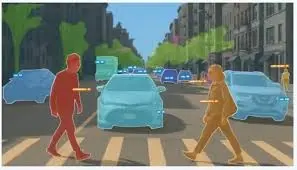

電腦視覺 (Computer Vision, CV) 賦予電腦「看」的能力，使其能從圖像或影片中提取資訊。這項技術已從學術研究走向商業化，廣泛應用於安防、醫療、製造與自駕車等領域。
影像處理基礎
影像處理基礎 (Image Processing Basics) 是 CV 的前置步驟。影像在電腦中通常表示為像素矩陣（例如 RGB 三通道）。
Python 範例：使用 OpenCV 讀取與處理影像
import cv2
import numpy as np
import matplotlib.pyplot as plt
# 創建一個簡單的圖像 (黑色背景，白色矩形)
image = np.zeros((100, 100), dtype=np.uint8)
cv2.rectangle(image, (20, 20), (80, 80), 255, -1)
# 邊緣檢測 (Canny)
edges = cv2.Canny(image, 100, 200)
# 顯示
plt.figure(figsize=(6, 8))
plt.subplot(2, 1, 1)
plt.imshow(image, cmap='gray')
plt.title('Original')
plt.subplot(2, 1, 2)
plt.imshow(edges, cmap='gray')
plt.title('Edges')
plt.tight_layout()
plt.show()
核心任務與模型
深度學習模型在 CV 領域取得了巨大成功，主要涵蓋三大任務：分類、偵測與分割。
1. 影像分類 (Image Classification)
- 定義：判斷整張影像的主要內容屬於哪一類別（例如：「這是一隻貓」）。
- 卷積神經網路 (CNN)：
- 卷積層 (Convolutional Layer)：利用卷積核 (Kernel) 滑動提取局部特徵（如邊緣、紋理）。
- 池化層 (Pooling Layer)：降低維度，保留顯著特徵（Max Pooling）或平均特徵（Average Pooling）。
- 架構圖解：
graph LR
Input["輸入影像"] --> Conv["卷積層<br/>(提取特徵)"]
Conv --> Pool["池化層<br/>(降維)"]
Pool --> Conv2["卷積層 2"]
Conv2 --> Pool2["池化層 2"]
Pool2 --> Flatten["攤平層"]
Flatten --> Dense["全連接層<br/>(分類)"]
Dense --> Output["輸出類別"]
%% Styling
style Input fill:#fff,stroke:#333,color:#000
style Conv fill:#e1f5fe,stroke:#0277bd,color:#000
style Pool fill:#fff9c4,stroke:#fbc02d,color:#000
style Conv2 fill:#e1f5fe,stroke:#0277bd,color:#000
style Pool2 fill:#fff9c4,stroke:#fbc02d,color:#000
style Flatten fill:#f3e5f5,stroke:#7b1fa2,color:#000
style Dense fill:#e0f2f1,stroke:#00695c,color:#000
style Output fill:#fff,stroke:#333,color:#000
Python 範例：使用 TensorFlow/Keras 建構簡單 CNN
import tensorflow as tf
from tensorflow.keras import layers, models
# 建立一個簡單的 CNN 模型
model = models.Sequential([
# 卷積層 1：32 個 3x3 濾鏡，ReLU 活化函數
layers.Conv2D(32, (3, 3), activation='relu'),
# 池化層 1：2x2 最大池化
layers.MaxPooling2D((2, 2)),
# 卷積層 2：64 個 3x3 濾鏡
layers.Conv2D(64, (3, 3), activation='relu'),
# 池化層 2
layers.MaxPooling2D((2, 2)),
# 攤平層：將 2D 特徵圖轉為 1D 向量
layers.Flatten(),
# 全連接層：64 個神經元
layers.Dense(64, activation='relu'),
# 輸出層：10 個類別 (Softmax)
layers.Dense(10, activation='softmax')
])
# 顯示模型架構摘要
model.summary()
┏━━━━━━━━━━━━━━━━━━━━━━━━━━━━━━━━━┳━━━━━━━━━━━━━━━━━━━━━━━━┳━━━━━━━━━━━━━━━┓
┃ Layer (type) ┃ Output Shape ┃ Param # ┃
┡━━━━━━━━━━━━━━━━━━━━━━━━━━━━━━━━━╇━━━━━━━━━━━━━━━━━━━━━━━━╇━━━━━━━━━━━━━━━┩
│ conv2d (Conv2D) │ ? │ 0 (unbuilt) │
├─────────────────────────────────┼────────────────────────┼───────────────┤
│ max_pooling2d (MaxPooling2D) │ ? │ 0 │
├─────────────────────────────────┼────────────────────────┼───────────────┤
│ conv2d_1 (Conv2D) │ ? │ 0 (unbuilt) │
├─────────────────────────────────┼────────────────────────┼───────────────┤
│ max_pooling2d_1 (MaxPooling2D) │ ? │ 0 │
├─────────────────────────────────┼────────────────────────┼───────────────┤
│ flatten (Flatten) │ ? │ 0 (unbuilt) │
├─────────────────────────────────┼────────────────────────┼───────────────┤
│ dense (Dense) │ ? │ 0 (unbuilt) │
├─────────────────────────────────┼────────────────────────┼───────────────┤
│ dense_1 (Dense) │ ? │ 0 (unbuilt) │
└─────────────────────────────────┴────────────────────────┴───────────────┘
Trainable params: 0 (0.00 B)
Non-trainable params: 0 (0.00 B)
- 經典模型：
- VGG (Visual Geometry Group)：
- 特點：捨棄了早期 CNN 使用的大尺寸卷積核（如 7x7），改為全面使用小尺寸的 3x3 卷積核。
- 優勢：
- 參數更少：堆疊兩個 3x3 卷積層的感受野 (Receptive Field) 等同於一個 5x5 卷積層，但參數數量更少 2 × 32 = 18 vs 1 × 52 = 25。
- 非線性更強：更多的層數意味著更多的 ReLU 活化函數，增強了模型的特徵學習能力。
- 代表作：VGG16 (16層) 與 VGG19 (19層)。
- ResNet (Residual Network)：
- 核心創新：引入殘差連接 (Residual Connection) 或稱「捷徑 (Shortcut)」。
- 公式解析：\[ y = F(x) + x \]
- x：輸入訊號（原始資訊）。
- F(x)：經過卷積層處理後的變化量（殘差）。
- y：輸出訊號。
- 原理：傳統網路試圖直接學習目標映射 H(x)，這很困難。ResNet 改為學習殘差 F(x) = H(x) - x。這就像是與其從頭學習如何畫一隻貓，不如在已有的草圖 (x) 上進行修改 F(x)。
- 優勢：解決了深層網路的梯度消失 (Vanishing Gradient) 問題。即使網路非常深，梯度也能透過 x 這條「高速公路」直接傳回前面的層，讓訓練上百層的網路成為可能。
2. 物件偵測 (Object Detection)
- 定義：不僅識別物體是什麼（分類），還要找出它在哪裡（定位，Bounding Box）。
- 代表模型：
- YOLO (You Only Look Once)：
- 核心概念：將物件偵測視為單一的回歸問題 (Regression Problem)，直接從影像像素預測邊界框與類別機率。這與 R-CNN 系列（兩階段：先找候選區，再分類）不同，YOLO 速度極快，實現了真正的即時偵測 (Real-time Detection)。
- 運作流程：
- 網格劃分 (Grid Division)：將輸入影像劃分為 S × S 的網格。
- 預測 (Prediction)：如果一個物件的中心落入某個網格，該網格就負責偵測該物件。每個網格預測 B 個邊界框 (Bounding Boxes) 及其信心分數 (Confidence Score)，以及 C 個類別機率。
- 非極大值抑制 (NMS)：去除重疊度高且信心分數較低的框，只保留最佳結果。
- 流程圖解：
graph LR
Img["輸入影像"] --> Grid["劃分 SxS 網格"]
Grid --> CNN["CNN 特徵提取"]
CNN --> Pred["預測張量<br/>(SxSx(B*5+C))"]
Pred --> Box["邊界框 + 類別機率"]
Box --> NMS["非極大值抑制<br/>(NMS)"]
NMS --> Final["最終偵測結果"]
style Img fill:#fff,stroke:#333,color:#000
style Grid fill:#e1f5fe,stroke:#0277bd,color:#000
style CNN fill:#fff9c4,stroke:#fbc02d,color:#000
style Pred fill:#e1f5fe,stroke:#0277bd,color:#000
style NMS fill:#f3e5f5,stroke:#7b1fa2,color:#000
style Final fill:#fff,stroke:#333,color:#000
- 評估指標：IoU (Intersection over Union)
- 衡量預測框與真實框重疊程度的指標。
- 公式： \[ IoU = \frac{\text{重疊區域 (Intersection)}}{\text{聯集區域 (Union)}} \]
- 計算範例：
- 真實框面積 = 100，預測框面積 = 80。
- 重疊區域 (Intersection) = 40。
- 聯集區域 (Union) = 100 + 80 - 40 = 140。
- IoU = 40 / 140 ≈ 0.286。
- 通常 IoU > 0.5 視為偵測成功。
3. 影像分割 (Segmentation)
- 定義：將影像中的每一個像素 (Pixel) 都分配一個類別標籤，是電腦視覺中最精細的任務。

- 類型比較：
- 語義分割 (Semantic Segmentation)：
- 概念：只管「類別」，不管「個體」。
- 例子：照片中有 5 個人，所有屬於「人」的像素都塗成紅色。背景都塗成黑色。
- 實例分割 (Instance Segmentation)：
- 概念：既管「類別」，也管「個體」。結合了物件偵測與語義分割。
- 例子：照片中有 5 個人，第 1 個人塗紅、第 2 個人塗藍…以此類推。
- 常見模型：
- FCN (Fully Convolutional Network)：
- 創新：將傳統 CNN 最後的「全連接層」替換為「卷積層」。
- 優勢：這讓模型可以接受任意尺寸的輸入影像，並輸出一張與輸入等大的熱點圖 (Heatmap)，實現像素級分類。
- Mask R-CNN：
- 架構：在 Faster R-CNN 的基礎上，增加了一個全卷積分支 (FCN Branch) 用於預測二值遮罩 (Binary Mask)。
- 關鍵技術：RoI Align。解決了傳統 RoI Pooling 在量化時的座標誤差問題，實現了像素級的精準對齊。
- U-Net：
- 架構：呈現 “U” 字型。左半部是編碼器 (Encoder) 負責壓縮特徵（下採樣），右半部是解碼器 (Decoder) 負責還原尺寸（上採樣）。
- 關鍵技術：跳躍連接 (Skip Connections)。將編碼器的高解析度特徵直接「複製貼上」到解碼器對應層，解決了上採樣過程中細節丟失的問題。
- 應用：因其對邊緣細節的精準捕捉，成為醫療影像分割（如細胞、腫瘤切割）的首選模型。
- 架構圖解：
%%| fig-cap: "U-Net 架構圖：Encoder-Decoder 與 Skip Connections"
graph LR
subgraph Encoder ["編碼器 (特徵提取)"]
E1["Conv Block 1"] --> P1["Max Pool"]
P1 --> E2["Conv Block 2"]
E2 --> P2["Max Pool"]
P2 --> E3["Conv Block 3"]
end
subgraph Decoder ["解碼器 (還原尺寸)"]
U1["UpConv 1"] --> D1["Conv Block 4"]
U2["UpConv 2"] --> D2["Conv Block 5"]
end
E3 --> U1
D1 --> U2
%% Skip Connections
E2 -.->|"Skip Connection<br/>(複製特徵)"| D1
E1 -.->|"Skip Connection<br/>(複製特徵)"| D2
style Encoder fill:#e1f5fe,stroke:#0277bd
style Decoder fill:#fff9c4,stroke:#fbc02d
產業應用情境
1. 監控與安全 (Surveillance & Security)
- 人臉辨識：
- 流程：人臉檢測 -> 特徵提取 (眼睛、鼻子位置) -> 資料庫比對。
- 應用：門禁系統、考勤打卡。
- 車牌辨識 (ANPR)：
- 流程：車牌定位 -> 字符分割 -> OCR 識別。
- 應用：停車場管理、電子收費 (ETC)。
2. 醫療影像診斷 (Medical Imaging)
- 影像分類：輔助判讀 X 光、CT 或 MRI，例如判斷是否有肺炎特徵。
- 影像分割：使用 U-Net 精確勾勒腫瘤或器官輪廓，協助手術規劃。
- 關鍵：需專業醫師標註的高品質資料，且須嚴格遵守隱私法規 (HIPAA)。
3. 智慧製造與零售 (Smart Manufacturing & Retail)
- 工業瑕疵偵測 (AOI)：
- 自動檢測產品表面的刮痕、裂紋或尺寸偏差，取代人工目檢，提升良率。
- 結合邊緣運算 (Edge Computing) 實現即時回饋。
- 零售行為分析：
- 熱點圖 (Heatmap)：分析顧客在店內的移動路徑與停留時間，優化貨架擺設。
- 無人商店：追蹤顧客拿取商品的動作，實現自動結帳。
4. 自動駕駛 (Autonomous Driving)
- 車道線偵測：確保車輛行駛在正確車道。
- 障礙物識別：辨識行人、車輛、交通號誌。
- 多模態融合 (Sensor Fusion)：結合攝影機 (視覺)、LiDAR (深度) 與雷達 (速度) 數據，提供更可靠的環境感知。
風險與挑戰
1. 資料隱私與合規 (Privacy & Compliance)
電腦視覺往往涉及對「人」的監控，因此隱私風險極高。
- 核心挑戰：
- PII 洩漏：人臉、步態、車牌等生物特徵或個資一旦被濫用，將嚴重侵犯隱私。
- 法規遵循：需符合 GDPR (歐盟)、CCPA (加州) 或當地個資法規範。
- 治理對策：
- 去識別化 (De-identification)：在儲存或傳輸前，自動對人臉、車牌進行模糊化 (Blurring) 或遮罩 (Masking) 處理。
- 資料最小化 (Data Minimization)：只收集達成目的所需的最小數據量。例如，若只需計算人流，則不應儲存清晰的人臉影像。
- 邊緣運算 (Edge Computing)：將數據在本地端（攝影機）處理完畢，只上傳統計結果（如：「現在有 5 個人」），而不上傳原始影像。
2. 偏見與公平性 (Bias & Fairness)
- 核心挑戰：
- 資料集偏差：若訓練資料集中某個族群（如白人男性）佔絕大多數，模型對少數族群（如深色膚色女性、長者）的辨識準確率會顯著下降。
- 社會衝擊：在執法或安防領域，這種偏差可能導致錯誤逮捕或歧視性待遇。
- 治理對策：
- 多樣性採樣 (Diverse Sampling)：主動確保訓練資料涵蓋不同的性別、種族、年齡、光照條件與場景。
- 偏見審計 (Bias Audit)：在模型上線前，必須針對不同子群體 (Subgroups) 分別測試效能，確保假陽性率 (False Positive Rate) 與假陰性率 (False Negative Rate) 在各群體間是均衡的。
3. 部署與維運 (Deployment & Ops)
- 核心挑戰：
- 算力限制：CV 模型通常參數量巨大，難以在資源受限的邊緣設備（如無人機、IoT 攝影機）上達到即時推論 (Real-time Inference)。
- 資料漂移 (Data Drift)：訓練時的影像通常很清晰，但實際場景可能遇到雨天、夜間、鏡頭髒汙或視角改變，導致模型效能雪崩式下降。
- 治理對策：
- 模型壓縮 (Model Compression)：
- 量化 (Quantization)：將參數從 32-bit 浮點數轉為 8-bit 整數，大幅減少模型大小與記憶體佔用。
- 剪枝 (Pruning)：移除神經網路中不重要的連接或神經元。
- 輕量化架構：選用 MobileNet, ShuffleNet 或 YOLO-Nano 等專為行動裝置設計的模型。
- 持續監控 (Continuous Monitoring)：建立 MLOps 流程，監控影像品質（如亮度、模糊度）與模型信心分數。一旦發現異常，自動觸發警報或重新訓練 (Retraining)。